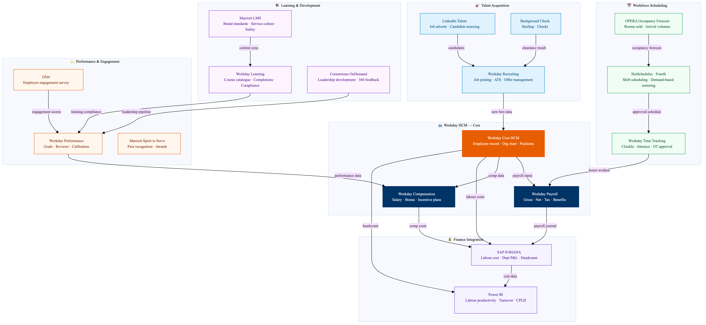

This diagram maps the Marriott HR technology ecosystem centred on Workday HCM. Workday serves as the single system of record for all employee data managing recruitment through Workday Recruiting, onboarding, performance reviews, payroll, and benefits. Workforce scheduling integrates with OPERA PMS to align staffing levels with occupancy forecasts. Learning and development runs through Workday Learning with brand-specific courses from Marriott's proprietary LMS. Labour costs from Workday feed directly to SAP S/4HANA for departmental P&L reporting and benchmarking against STR labour productivity metrics.